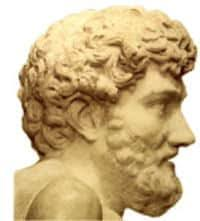

Zakura
La flor zakura es una flor nipona la cual se da en una época primavareal
la flor tiene mucho polem
Otras fabulas de Esopo
un viaje a un mundo de fantacia
- La liebre y la tortuga
- La cigarra y la hormiga
- El león y el ratón
- Las moscas
- El asno y el león
| Autor | Fabulas |
|---|---|
| Rafael pombo | Renacuajo paseador
La pobre viejecita |
| Jean La Fontanie | El molinero
El zorro y el cuervo |
| Tomás de Iriarte | El burro flautista
La mona |
| Rafael García Goyena | La araña y el mosquito
El guarda y el loro |
En la primavera japonesa,
las flores de cerezo están
con su belleza profana
que nos hace suspirar.
rosa claro y delicado
se visten los árboles en flor,
creando un mar de color
que cautiva hasta al más atrevido.
Bajo su sombra se sientan
parejas de enamorados,
y en silencio meditamos
sobre la vida y lo que nos espera.
Pero no dura mucho tiempo,
pronto las flores caerán,
y en su lugar vendrán
hojas verdes en su esplendor.
Por eso, aprovecha el momento
y admira la belleza efímera
de las flores de cerezo japonesas,
que nos enseñan a valorar la vida.
Biografia de Esopo
En la Época Clásica su figura gozaba de gran popularidad, pero se vio rodeada de elementos legendarios que hacen difícil establecer de manera precisa cualquier dato seguro sobre su biografía; de hecho, S. Josifovich estima que nunca existió, aunque Ben Edwin Perry, Anton Wiechers, How-Wells y Janos Sarkady entre otros defienden de un modo u otro su autenticidad;1 también se piensa que el personaje parece ser un remedo del consejero babilonio Ahikar, secretario del rey Senaquerib.2
La primera referencia que se conoce sobre Esopo es una cílica de figuras rojas fechada en torno al año 470 a. C.; en ella, se ve a Esopo hablando con una zorra.3 En fuentes literarias de la Grecia clásica, aparece citado por Heródoto,4 Aristófanes,5 Aristóteles,6 y Platón. Este último dice que Sócrates se sabía de memoria los apólogos de Esopo y los versificaba.7Hacia el siglo i se estima que surgió una biografía novelada de autor anónimo titulada Vida de Esopo,8 y mucho más tarde, en época medieval, Máximo Planudes elaboró otra Vida de Esopo, repleta de elementos folclóricos y legendarios.
Estilos css3
rudius greyrat

Rudeus es un mago a nivel Santo, capaz de romper la "Barrera del Dragón" de Orsted y de infligir un daño proporcional a la fuerza acumulativa de todos sus atributos elementales